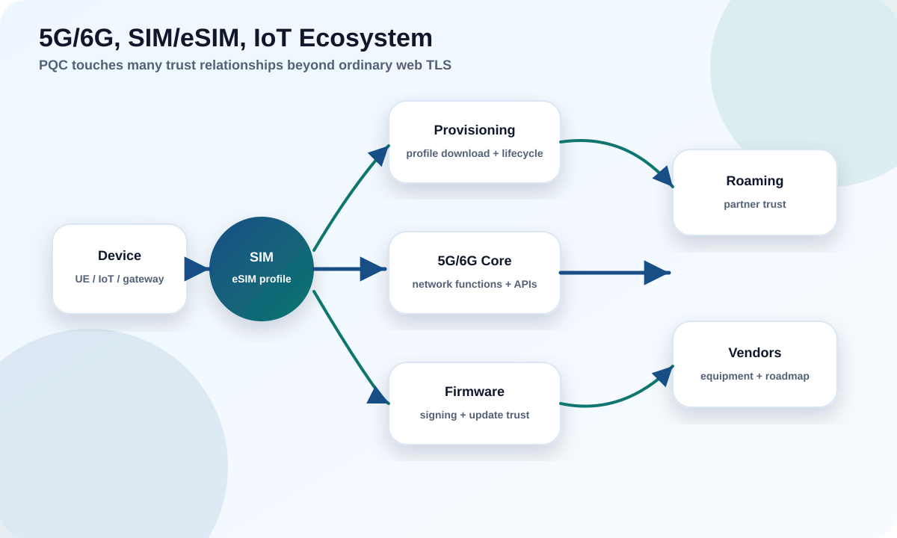

Telecom is where every hard PQC problem meets at once: identity at massive scale, roaming across operators you do not control, tiny secure elements, and devices that live in the field for a decade or more.
Explain why telecom PQC is a cross-operator ecosystem problem.
Locate PQC touch points in 5G authentication and SIM/eSIM provisioning.
Plan for constrained, long-lived IoT and device fleets.
Read current GSMA, 3GPP, and ETSI PQC status without confusing drafts, studies, and demonstrations with published standards.

Try it: what happens when an eSIM profile is downloaded
eSIM provisioning is a chain of signed and encrypted steps across several parties. Step through where PQC will land.
Read the pattern
The identity/PKI and key-establishment steps are the PQC targets; the constrained secure element is the sizing challenge; and no single operator controls the whole chain.
1
Telecom PQC is an ecosystem problem
A phone call or data session crosses devices, SIMs, radios, cores, and often multiple operators — owned by different companies.
No single organization can "turn on PQC" for a mobile network. Device vendors, SIM/eUICC makers, network-equipment vendors, operators, roaming partners, and standards bodies (3GPP, GSMA) must move in a coordinated way. That is why telecom relies on standards and long lead times, and why crypto-agility is essential: you are negotiating change across a federation.
One ecosystem, distinct protocol surfaces and owners
This is an ownership and dependency map, not one end-to-end cryptographic handshake. A lagging partner can block a specific interface without forcing unrelated local interfaces to remain classical.
Takeaway
Treat telecom PQC as a portfolio of interoperating interfaces. The slowest required partner sets the pace for that interface; local interfaces can still advance when negotiation, policy, and downgrade telemetry are designed correctly.
2
5G and future 6G trust layers
5G improved subscriber-identity privacy; standards work is now examining quantum-safe impacts, but final 6G cryptographic profiles are not settled.
5G conceals the long-term subscriber identifier (SUPI) as SUCI using a public-key protection scheme, making that interface a natural PQC study target. Core network functions use TLS-based service interfaces and inherit TLS migration issues. 5G-AKA is primarily symmetric and needs a separate parameter/protocol review.
3GPP SA3's Release 20 study FS_CryptoPQC, "Study on Transitioning to Post Quantum Cryptography in 3GPP," is documented in TR 33.703. It is generation-agnostic rather than a 6G design: it reviews the profiles 3GPP takes from other bodies (TLS, IPsec, PKI, and JOSE, which the IETF is updating) and the 3GPP-defined procedures, such as SUCI calculation in TS 33.501 and MIKEY-SAKKE for mission-critical services in TS 33.180. The 3GPP portal listed the study as PCG-approved with a June 2026 end date, and TR 33.703 v20.1.0 was posted in September 2026. 3GPP described the next step as defining work packages for the normative specifications, so a study conclusion is not yet a published PQC SUCI profile or a revised TS 33.501/33.210/33.310.
Symmetric margins move separately
Release 20 also introduced 256-bit algorithm specifications (TS 35.240 to TS 35.248) to keep symmetric margins high against Grover-style search. That is a parameter upgrade for mostly symmetric radio and AKA security, not a replacement of public-key mechanisms such as SUCI concealment or certificate-based TLS.
Sort the surface into three buckets. Symmetric-heavy pieces such as AKA and over-the-air protection are not broken by Shor; validate their parameters against the future profile instead of applying a blanket "double every key" rule. Public-key pieces such as SUCI, SBA TLS, and RSP certificates are the main replacement targets. Long-lived confidentiality or authenticity determines urgency. Mapping each interface this way is faster and more accurate than labeling an entire generation "quantum-safe."
Concrete example
The SUCI concealment that hides your permanent identity uses elliptic-curve public-key cryptography today. A quantum adversary who harvested those exchanges could later de-conceal identifiers — a privacy harvest-now-decrypt-later case, motivating PQC there.
The 6G opportunity
Early standards work can make algorithm identifiers, negotiation, larger objects, telemetry, and replacement paths explicit before deployment. That is an opportunity, not a guarantee: track the normative 3GPP/GSMA output and test the resulting profiles before calling a system 6G quantum-safe.
3
SIM and eSIM lifecycle
The (e)SIM is a tiny, hardened computer with real constraints — and a long, multi-party trust chain.
SIM/eSIM provisioning (GSMA RSP) relies on certificate-based authentication and protected profile delivery. The eUICC has finite nonvolatile memory, RAM, transaction buffers, and compute. Larger PQC objects can be a fit problem, but "eUICC" does not mean one fixed capacity or always-soldered packaging.
July 2026 ecosystem signal
GSMA reported a live quantum-safe pre-SGP.42 IFPP demonstration at MWC Shanghai involving IDEMIA, Quectel, and Tele2 IoT. This shows ecosystem experimentation with PQC-aware factory provisioning; it does not establish a published SGP.42 standard, production interoperability baseline, or certification profile.
Published GSMA status, checked 14 October 2026
No published GSMA eSIM specification yet defines PQC algorithms. The GSMA specification page listed SGP.22 v2.7 (24 April 2026) and v3.1 as the active consumer technical versions, SGP.32 v1.3 and SGP.31 v1.3 (both 22 May 2026) for IoT, and SGP.41 v1.0 for in-factory provisioning architecture; its technical counterpart, SGP.42, is not published. A vendor claiming "PQC-compliant SGP.22" today is describing a pre-standard implementation.
Work in progress: confidentiality first
GSMA eSIM Working Group change requests circulated in October 2026 and marked non-confidential (for example, CR20016 against draft SGP.31 V2.0 under work item WI_028) propose carrying the PQC features planned for SGP.21/SGP.22 V3.2 into the IoT requirements. The drafts concentrate on confidentiality against quantum attacks: hybrid classical-plus-PQC key distribution using a standardized KEM such as ML-KEM (FIPS 203), at least one common post-quantum KEM supported by the SM-DP+, IPA, and eUICC, the SM-DP+ selecting algorithms from those the eUICC supports, and quantum-resistant confidentiality on interfaces such as ES8+, ES9+, ES11, ES12, ES2+, and ESipa. They are open change requests against draft versions, not approved or published requirements, and they do not by themselves replace the classical signatures in the eSIM certificate hierarchy.
Why start with confidentiality? A recorded profile download or management session is a harvest-now-decrypt-later target: protected profile data and keys captured today could be decrypted later. Forging a signature, by contrast, requires a cryptographically relevant quantum computer at the moment of attack, so authentication can follow on its own schedule — except for long-lived roots and verifiers that must already be planned, because certificate hierarchies and secure-element verifiers take years to replace.
Use vendor measurements, not a kilobytes-versus-megabytes slogan. Current commercial eSIM secure elements advertise capacities such as roughly 1.1 MB or 1.8 MB of user nonvolatile memory, while working RAM and per-command buffers can be much smaller; profiles, OS code, and security metadata also consume space. The engineering questions are whether the exact key, signature, certificate chain, temporary buffers, and transaction fit simultaneously and meet timing/power limits on each supported generation.
Everyday analogy
Upgrading the eSIM trust chain is like changing the locks on every safe-deposit box in a banking network where the vault doors were made by different companies, the boxes are welded shut, and the master key hierarchy is shared across the whole industry. You cannot just email a patch — everyone who touches the chain has to agree and re-tool.
4
IoT, firmware, and long-lived devices
Field devices combine every worst-case factor: constrained hardware, long life, and hard-to-update verifiers.
New hardware with PQC/dual verification; compensating controls
Intermittent connectivity
Hard to push updates
Robust, resumable, signed update channel
Takeaway
For device fleets, the decision made at manufacture dominates. Build agility and PQC-capable verification into new hardware now, because you cannot retrofit an immutable verifier later.
5
Strategies for constrained devices
When the chip cannot hold or run a full PQC scheme, you have more options than "give up."
The size and speed of ML-KEM/ML-DSA are generally manageable on modern application processors but may challenge a secure element or ultra-low-power sensor depending on RAM, buffers, acceleration, firmware, and role. Benchmark the exact parameter set and operation; avoid deciding from storage capacity alone.
Strategy
How it helps
Trade-off
Pick the job-appropriate scheme
KEM verify/encaps and ML-DSA verify are cheap even when signing is not
Match the burden to what the device actually does (usually verify)
Verify-only on device
Devices only check signatures; heavy signing stays in the cloud
Requires the device role to be verification, not signing
Stateful hash signatures (LMS/XMSS)
Tiny public keys, ideal for firmware verification
Signer must manage state carefully (never reuse)
Terminate PQC at a gateway
A capable gateway does PQC to the internet; a lightweight link protects the last hop
Adds a trusted gateway to the model
Hardware acceleration / next-gen SE
New secure elements add PQC support and speed
A manufacturing-cycle dependency, not a field fix
Concrete example
A smart meter may only verify firmware while signing stays in the vendor HSM. That role separation can make ML-DSA or a stateful hash-based verifier feasible, but "verify-only" is not proof of fit. Measure public-key storage, signature transport, RAM, code size, verification latency, power, failure handling, and the secure-boot format before selecting the scheme.
Common pitfall
Benchmarking signing when the device only verifies — or assuming verification is automatically affordable. Measure the operation the product actually performs on production-equivalent hardware, including worst-case memory and update-package size.
6
Coordinating the federation
In a system no one owns end to end, the migration is a negotiation as much as an engineering task.
Because a mobile session spans five independently owned links, an operator's PQC plan is really a program of alignment: pushing requirements into standards (3GPP, GSMA), writing PQC and crypto-agility clauses into device, chip, and equipment contracts, tracking each roaming partner's roadmap, and staging changes so that no link is forced to fall back permanently. The technical work is real, but the pacing item is coordination.
Concrete example
An operator wanting PQC-protected eSIM provisioning cannot ship it alone: the GSMA trust hierarchy, the eUICC vendors, and the provisioning-server (SM-DP+) vendors must all support the new algorithms and larger certificates first. The operator's most effective lever is often standards participation and procurement clauses — not code.
The operator's real toolkit
Notice how little of this is code. An operator's most powerful PQC levers are influence in standards bodies, precise PQC and crypto-agility requirements in supplier contracts, and disciplined tracking of every partner's roadmap. Engineering readiness matters, but in a federation the migration is won or lost on coordination.
Takeaway
For federated systems, invest early in standards influence and contract language. Those, plus crypto-agility, let you move the instant your slowest partner is ready — and not a release later.
7
Telecom PQC standards status tracker
Telecom PQC news arrives as studies, white papers, change requests, demonstrations, and published specifications. Label each one before you plan against it.
The table below records the status checked on 14 October 2026. The "Status" column matters more than the document number: a demonstration proves feasibility, a study informs requirements, a change request is a proposal, and only a published specification version is something a supplier can be certified against.
Body / document
What it covers
Status (14 Oct 2026)
GSMA SGP.22 (consumer RSP technical)
v2.7 (24 April 2026) and v3.1 (1 December 2023) are active
Published, classical cryptography; PQC features are being drafted for a v3.2 line
GSMA SGP.21 / SGP.31 (architecture and requirements)
SGP.31 v1.3 (22 May 2026) is active; SGP.31 V2.0 is in drafting under WI_028
Open, non-confidential change requests propose hybrid PQC key distribution requirements
GSMA SGP.32 (IoT technical)
v1.3 (22 May 2026) with eIM, IPA, ESipa, and ESep; test specifications SGP.33 remain at v1.2
Published, classical; the newest version is not automatically the certification baseline
SGP.41 v1.0 (28 February 2025) sets architecture and requirements
SGP.42 unpublished; a quantum-safe pre-SGP.42 demonstration ran in June 2026
GSMA PQTN Task Force, PQ.01–PQ.08
Impact assessment, risk management, telecom use cases (PQ.03), IoT (PQ.04), 4G/5G roaming (PQ.05), hybrid key exchange prototype for base station to security gateway IPsec (PQ.06, May 2026), non-terrestrial networks (PQ.07, February 2026), automotive impact assessment (PQ.08, October 2026)
Non-normative guidance; GSMA said a specification-impact table with indicative timelines will be published before the end of 2026
3GPP TR 33.703 (FS_CryptoPQC, Rel-20)
Transition of 3GPP profiles and 3GPP-defined procedures such as SUCI and MIKEY-SAKKE
Study; v20.1.0 posted September 2026; normative work packages are the next step
3GPP TS 35.240–35.248 (Rel-20)
256-bit symmetric algorithm specifications
Symmetric margin work, not public-key replacement
ETSI TS 103 744 V1.2.2 (February 2026)
Quantum-safe hybrid key establishment (CYBER QSC)
Published Technical Specification
ETSI TR 104 005 V1.2.1 (January 2026)
Impacts of PQC on ETSI TC SET (SIM/UICC) specifications
Published Technical Report (informative, not a card profile)
GlobalPlatform secure-element PQC
Secure channel and card-content management changes for PQC
In development; not published as a PQC amendment
GSMA's four PQTN workstreams
At its June 2026 MWC Shanghai roundtable, the GSMA Post-Quantum Telco Network Task Force described four parallel workstreams: a specification impact analysis of every GSMA specification, a telecom CBOM, crypto-agility guidelines for a roaming-dependent multi-vendor industry, and testing of ML-KEM and ML-DSA on real network elements, including SIM cards and low-end smart meters.
Read event summaries carefully
Event write-ups sometimes describe NIST's 2030 deprecation and 2035 disallowance of RSA and ECC as already in force. Those dates come from NIST IR 8547, which remains an initial public draft; binding dates come from the documents that adopt them, such as OMB M-26-15 for covered U.S. federal agencies. Cite the governing document, not the summary.
Takeaway
For every telecom PQC claim, record the body, document, version, and status. Plan supplier requirements against published versions and track drafts as roadmap items with an owner and a review date.
Hands-on labs
Decide first, then reveal.
Lab 1 · Roaming partner lag
Your network supports PQC, but a roaming partner does not.
What determines the effective security of a roaming session?
Recommended answer That specific roaming/interconnect path can use only a mutually standardized and implemented profile; it may remain classical or fail if no safe common profile exists. This does not require unrelated home-network interfaces to fall back. Track negotiated algorithms per interface, manage downgrade policy, and coordinate the partner roadmap through standards and contracts.
Lab 2 · eUICC won't fit
A chosen PQC signature is too large/slow for the current eUICC.
What are your options?
Recommended answer Select a smaller/faster parameter set or family suited to the constraint (verification speed and size matter most), work with the secure-element vendor on next-gen hardware, and stage the trust-chain upgrade so servers and chips move together.
Lab 3 · 10-year meter
You are specifying a utility meter that must run for 12 years.
What is the single most important PQC decision, and when?
Recommended answer At design/manufacture: make the firmware verifier crypto-agile and PQC-capable (or dual-verify). You cannot fix an immutable verifier in the field, so the manufacturing decision dominates the device's whole life.
Lab 4 · Verify-only sensor
A battery-powered sensor is "too weak for PQC," but it only checks firmware signatures — it never signs anything.
Is it really too weak, and what fits?
Recommended answer Probably not. Signing is the expensive operation; verification is comparatively cheap. ML-DSA verification is fast, and a tiny-public-key stateful hash scheme (LMS/XMSS) fits firmware verification very well. Keep the heavy signing in the vendor HSM and let the device only verify. "Too constrained" is usually a signing conclusion misapplied to a verify-only role.
Lab 5 · Operator lever
An operator wants PQC-protected eSIM provisioning but its code is already ready.
Why can't they just ship it, and what is their most effective action?
Recommended answer The GSMA trust hierarchy, eUICC vendors, and SM-DP+ provisioning servers must all support the new algorithms and larger certificates first — the operator owns only part of the chain. Their highest-leverage moves are standards participation (GSMA/3GPP) and PQC/agility clauses in procurement, which pull the rest of the federation forward.
Lab 6 · "PQC-compliant SGP.22"
In October 2026 an eUICC supplier's proposal says its product is "PQC-compliant with SGP.22" and asks you to make that a selection criterion.
How do you evaluate the claim and write the requirement?
Recommended answer No published SGP.22 version defines PQC yet (v2.7 and v3.1 are classical), so the claim can only mean a pre-standard implementation. Ask which draft or change request it follows, which algorithms and hybrid combination it uses, and what RAM, buffer, and timing results it measured. Write the requirement as an upgrade commitment: support the published GSMA PQC version within a stated period after publication, with crypto-agile key agreement and interoperability with your SM-DP+, rather than certifying today against a draft.
Lab 7 · Which half first?
Your eSIM platform team has budget for one PQC track this year: key establishment for profile delivery, or PQC signatures for the certificate hierarchy.
Which goes first, and what must the other track still do this year?
Recommended answer Key establishment first, matching GSMA's draft direction: recorded profile downloads are a harvest-now-decrypt-later target, while signature forgery needs a quantum computer at the time of attack. The signature track still needs this year's planning work: inventory the certificate hierarchy and long-lived verifiers, measure larger certificate chains on target eUICCs, and put agility requirements into new hardware, because those replacement cycles take years.
Knowledge check
Score 70%+ to mark this module complete.
Score: 0/0
Primary sources
Educational; consult 3GPP/GSMA and vendors for current specifics.
Step through eSIM provisioning first to see the multi-party trust chain, then read how 5G/6G, SIM/eSIM, and IoT each add their own constraints. Section 7 tracks which telecom PQC documents are published, drafted, or only demonstrated.